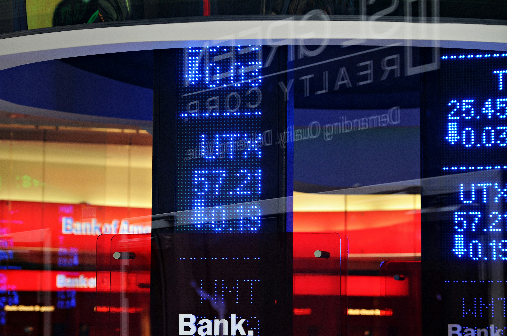

Forex vs Acciones: ¿Cuál Mercado es Mejor para Vos?
Explora las diferencias fundamentales entre el trading de divisas (Forex) y la inversión en acciones. Descubre cuál se alinea mejor con tus objetivos y perfil de riesgo.
Introducción a los Mercados
El mercado Forex y el mercado de acciones tienen características propias. Aunque ambos ofrecen oportunidades para la inversión y el trading, sus dinámicas son muy diferentes. Comprender estas diferencias es crucial para tomar decisiones informadas sobre dónde invertir tu capital y qué tipo de operativa se adapta mejor a tu perfil.
Principales Diferencias del Mercado Forex
El mercado Forex posee características únicas que lo hacen atractivo para muchos traders:
- Horario Extendido: El mercado Forex opera 24 horas al día, 5 días a la semana (de domingo por la noche a viernes por la tarde, hora de Nueva York). Esto te brinda una enorme flexibilidad para operar en cualquier momento, adaptándose a tu horario personal o laboral.
- Comisiones Bajas: En Forex, los brokers no suelen cobrar comisiones directas por operación. En su lugar, el costo se encuentra en el spread (la diferencia entre el precio de compra y venta), que tiende a ser muy competitivo.
- Apalancamiento: El apalancamiento es mucho mayor en Forex (frecuentemente de 1:50 a 1:500 o más) comparado con el mercado de acciones. Esto permite controlar posiciones grandes con un capital inicial relativamente pequeño, amplificando tanto las ganancias potenciales como los riesgos.
- Liquidez Incomparable: Forex es el mercado financiero más grande y líquido del mundo, con billones de dólares negociados diariamente. Esto significa que puedes entrar y salir de operaciones rápidamente sin afectar significativamente los precios, incluso con grandes volúmenes.
- Dirección del Mercado (Long/Short): En Forex, podés obtener beneficios tanto si el precio de una divisa sube (comprando) como si baja (vendiendo en corto). No hay restricciones para operar en ambas direcciones, lo que ofrece más oportunidades en cualquier condición de mercado.
- Tendencias Claras: Los pares de divisas a menudo muestran tendencias más prolongadas y claras en comparación con las acciones individuales, lo que puede facilitar la identificación de oportunidades con análisis técnico.
- Acceso a Información: Las noticias macroeconómicas (tasas de interés, inflación, empleo) son públicas y afectan directamente a las divisas. Hay mucha información disponible para el análisis fundamental, permitiendo decisiones basadas en datos.
Diferencias Clave en el Mercado de Acciones
Por otro lado, la inversión en acciones presenta sus propias características:
- Horario Limitado: Las bolsas de valores operan en horarios específicos durante días hábiles, lo que restringe la flexibilidad operativa.
- Comisiones y Gastos: Generalmente, el trading de acciones implica comisiones por operación y otros gastos asociados, aunque esto ha disminuido con la popularidad de los "brokers sin comisión".
- Apalancamiento Reducido: El apalancamiento es significativamente menor en acciones y en algunos casos está ausente, requiriendo un capital inicial mayor para controlar posiciones grandes.
- Liquidez Variable: Mientras que las acciones de grandes empresas son muy líquidas, muchas acciones de menor capitalización pueden tener una liquidez limitada, dificultando la entrada y salida de posiciones.
- Enfoque en Apreciación: Aunque se puede operar en corto, las restricciones suelen ser mayores y la principal forma de ganar es a través de la apreciación del valor de la acción.
- Influencia de la Empresa: Las acciones son directamente influenciadas por el rendimiento, las noticias y la gestión de una empresa específica, lo que requiere un análisis fundamental detallado de cada compañía.
-- Espacio para Anuncio de Google AdSense (In-article) --
“El éxito en los mercados no se trata de tener razón, sino de ser rentable.”
¿Cómo Operar para Ganar Dinero en Forex?
El objetivo principal en Forex es comprar una moneda esperando que aumente su valor respecto a otra, o vender si se espera que baje. Esto se realiza mediante pares de divisas. Siempre se compra una moneda y se vende otra al mismo tiempo.
Ejemplo práctico:
- Comprar GBP/JPY: Si comprás este par, estás comprando la libra esterlina (GBP) y vendiendo simultáneamente el yen japonés (JPY). Ganarás si la libra se fortalece frente al yen.
- Vender GBP/JPY: Si vendés este par, estás vendiendo la libra (GBP) y comprando el yen (JPY). Ganarás si la libra se debilita frente al yen (o el yen se fortalece frente a la libra).
Consejo para operar con éxito: Antes de abrir una operación, identificá si la moneda base se apreciará o depreciará frente a la moneda cotizada durante el período que planeás mantener la operación. Un análisis riguroso es clave.
¿Listo para Comenzar a Operar en Forex?
Descubre más sobre cómo funciona el mercado Forex y cómo puedes empezar a operar con éxito. Prepárate para el siguiente nivel de tu educación financiera.
Entender la Estructura del Mercado Encontrar un Broker Confiable